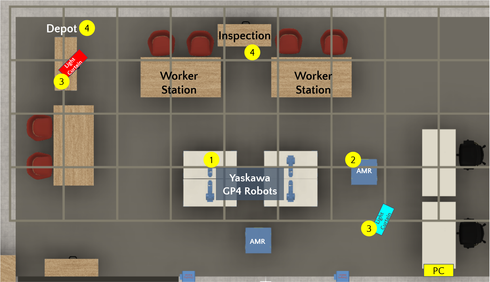
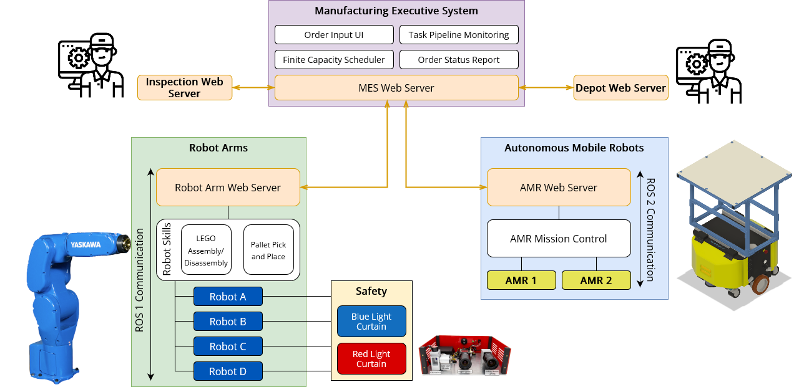

System Overview
The testbed has been setup for assembly/disassembly of LEGO® blocks. The figure below shows physical resources available to execute a task through the pipeline.

Resources
Resources are entities that perform production activities. Listed below are the resources part of the Testbed v1.0.
Robot Arms: Yaskawa GP4 robots
Autonomous Robot Arms: Neobotix MP400
Safety Light Curtains: ILIM Lab Programmable Light Curtains
Depot/Inspection: Human operated stations
Manufacturing Execution System (MES): Finite capacity scheduler that plans tasks for resources to fulfill order(s).
System Architecture

MES acts as the conductor in the symphony of the production by planning and assigning tasks to other resources. It communicates using POST messages with resource web servers which gives resources flexibility. For example, in the above architecture there are human operated stations, ROS1 based system resource and a ROS2 based system resource.